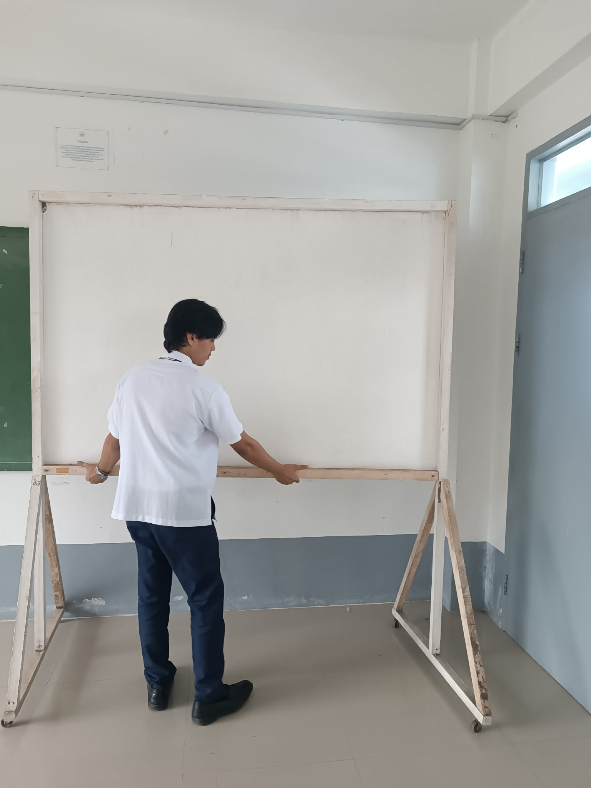
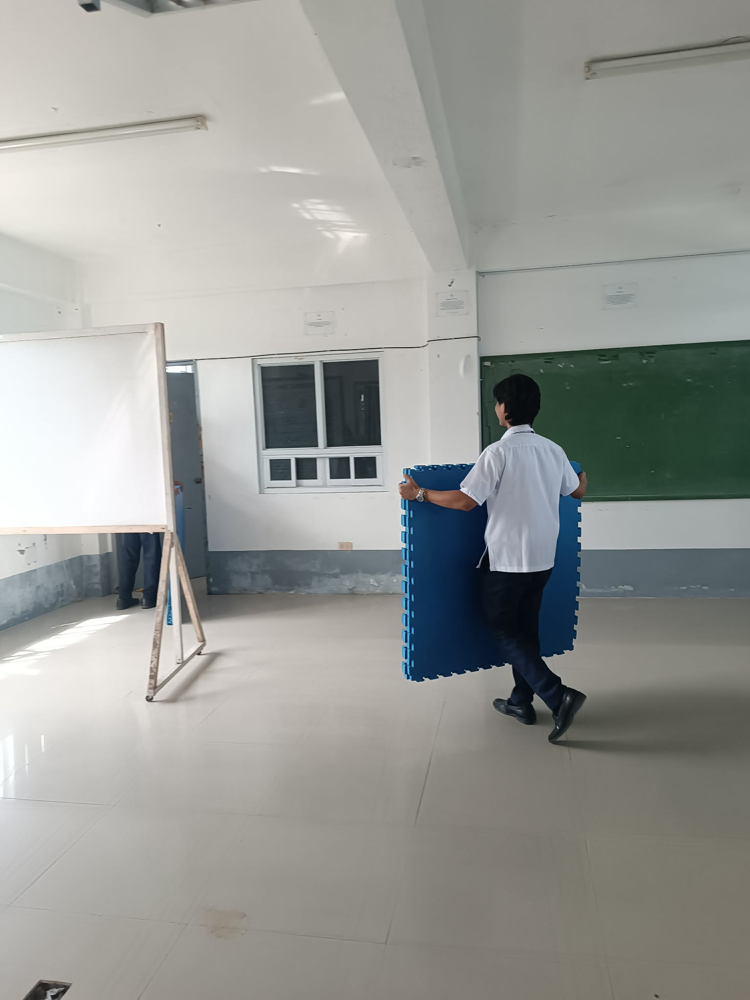
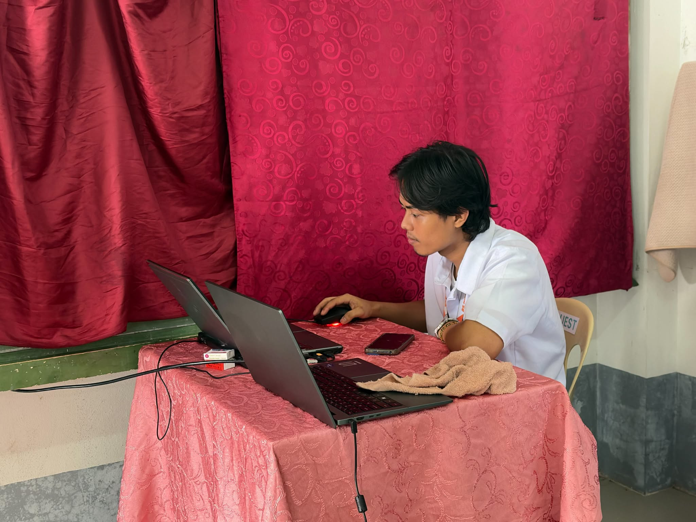
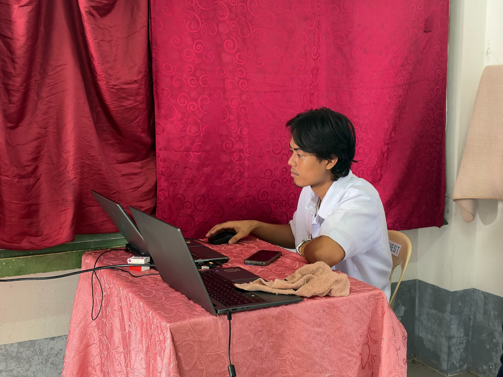
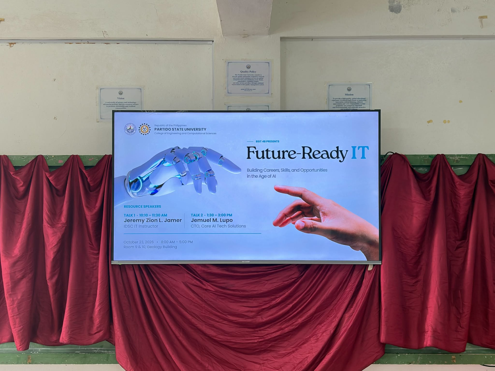
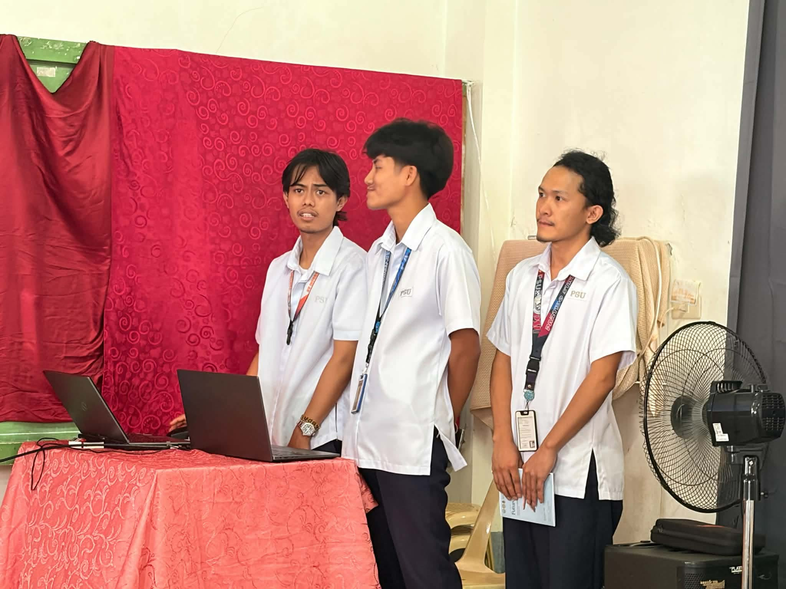

Narrative Report
A short account of the role played before, during, and after the seminar.
"Future-Ready IT: Building Careers, Skills, and Opportunities in the Age of AI" was a one-day seminar presented by BSIT 4B of the College of Engineering and Computational Sciences, held on October 23, 2026, from 8:00 AM to 5:00 PM in Rooms 9 and 10 of the Geology Building at Partido State University. The seminar was organized around two resource speakers: Mr. Jeremy Zion L. Jamer, an IT instructor at IDSC, who led the morning talk, and Mr. Jemuel M. Lupo, Chief Technology Officer of Core AI Tech Solutions, who led the afternoon talk.
My role was on the working team behind the event, focused on the physical setup of the venue and the technical side of the program. The day before the seminar, on October 22, I helped clean and prepare the room on the third floor of the Geology Building, moving furniture and equipment out of the way and arranging the space so it could comfortably hold the attendees. Once the room was ready, I helped test the technical parts of the program to make sure everything needed for the presentations was working.
On the day itself, I arrived early to help decorate the venue and to run through all of the technical requirements once more before the guests came in. Having checked everything the day before made the second round much faster, and it gave the team confidence that the program could begin on time and without interruptions.
The morning session, from 10:10 to 11:30 AM, was delivered by Mr. Jamer, who explained how artificial intelligence works and how powerful it can be, along with many related topics that showed participants where AI is already shaping the IT field and what that means for their own careers. In the afternoon, from 1:30 to 3:00 PM, Mr. Lupo spoke about what it means to be a full stack developer and shared his experiences working in a company, giving the audience a realistic look at the skills, habits, and challenges that come with a career in software development.
Seeing the two talks side by side was especially valuable: the morning session gave the big picture of where technology is heading, while the afternoon session showed what building a career in it actually looks like. Being part of the team that made the event possible allowed me to experience both the preparation behind a seminar and the learning that came from it.
Responsibilities across the three phases of the seminar.
On October 22, the day before the seminar, I helped clean and arrange the room on the third floor of the Geology Building, then helped test all of the technical parts to confirm that everything the program needed was working.
On October 23, I arrived early to help decorate the venue and tested all of the technical requirements again before the program started. I then stayed on hand for the technical needs of the two sessions: the morning talk by Mr. Jeremy Zion L. Jamer on how AI works and how powerful it can be, and the afternoon talk by Mr. Jemuel M. Lupo on life and work as a full stack developer.
After the program ended at 5:00 PM, I helped wrap up the event by shutting down and putting away the equipment and tidying the room, and I helped gather photos for documentation of the seminar.
Moments from the room preparation, the technical setup, and the seminar proper.






Future-Ready IT showed me that a good event depends on both the people on stage and the people working quietly behind them. Cleaning the room, decorating, and testing the equipment twice may seem like small tasks, but they are what allowed the two talks to run smoothly and let the audience focus on the speakers instead of on technical problems.
From Mr. Jamer's session, I came away with a clearer picture of how AI works and how much it can do, which reinforced how important it is for IT students to keep learning and adapting. From Mr. Lupo's session, I gained a realistic view of life as a full stack developer, including the experience of working in a company, which helped me see how the skills I am building now connect to a real career. As I finish my final year in the program, the seminar was a timely reminder that being future-ready means pairing technical skills with preparation, teamwork, and a willingness to keep growing.
Prepared by: Piano, Karl Laurence C.